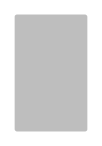
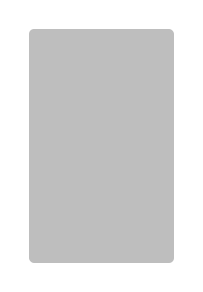

Dentro de um computador, existem pequenos interruptores chamados transistores, que podem estar ligados ou desligados.
 

Esses transistores são interpretados computacionalmente com o sistema binário , a linguagem fundamental dos computadores, que os representa com 0 para desligados e 1 para ligados.
As portas lógicas são como blocos de construção dos computadores. Elas aceitam entradas e produzem saídas com base em regras lógicas simples.